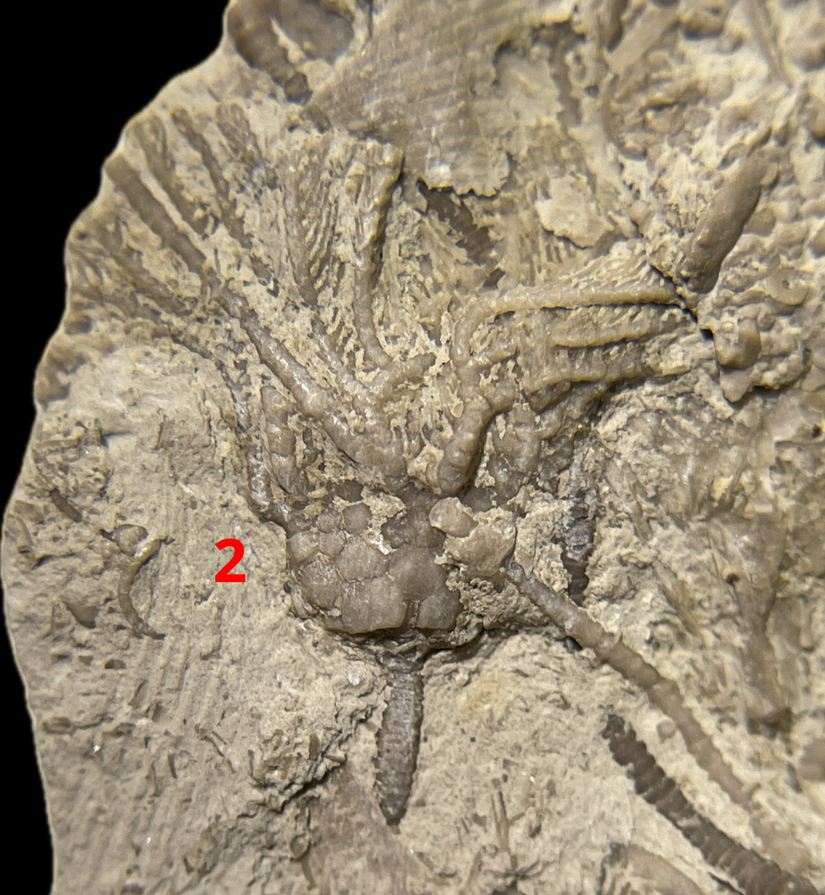
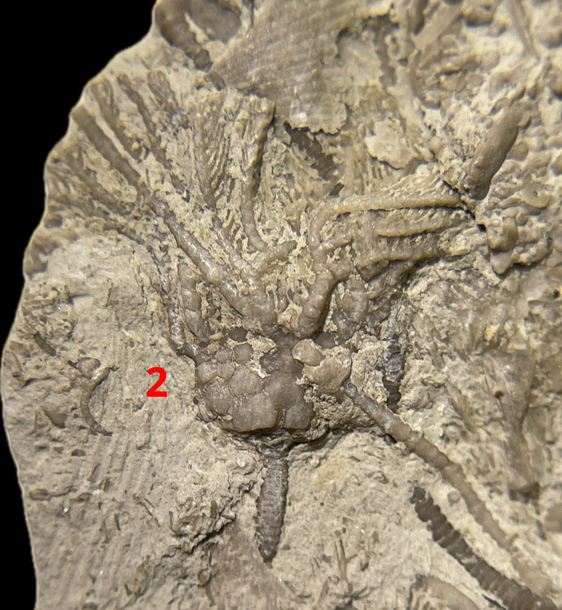

1. Dichocrinus delicatus?
2. Rhodocrinites nanus?
• Mississippian
• Hampton Formation/Maynes Creek Formation
• Le Grand, Iowa, USA
Size: 3.5 cm crowns for the Dichocrinus, 1.5 cm crown for the Rhodocrinites
 
